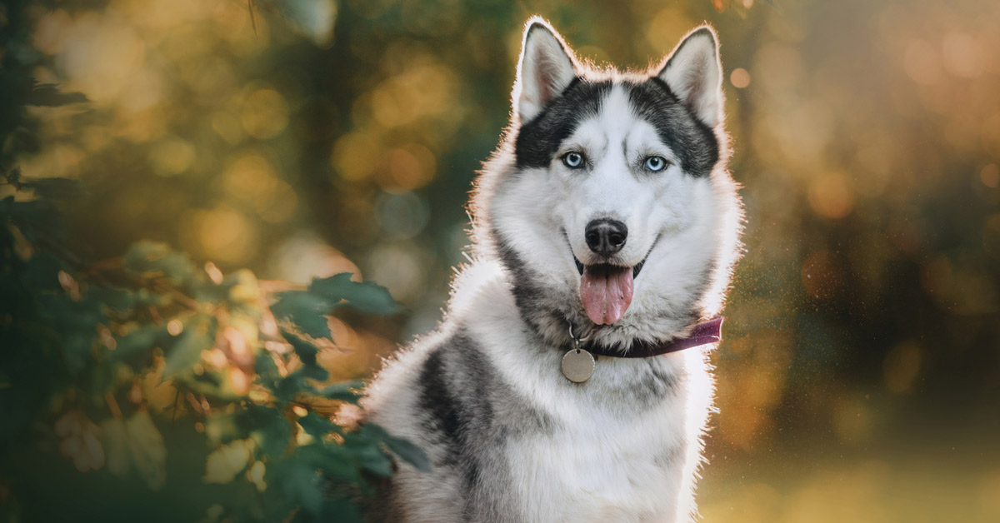

Cuervos.
Curiosidades de los cuervos.

Los cuervos son animales que suelen asociarse a cosas macabras e incluso a festividades como Halloween. La mala fama de estos pequeños pájaros no les hace ningún honor ya que cuentan con increíbles cualidades que los hace únicos. Sin ir más lejos, se les considera como uno de los animales más inteligentes del planeta, ya que son capaces de hacer cosas casi impensables para cualquier otra especie.
Perros.
Curiosidades de los perros.
El perro es un animal fascinante, y desde hace más de 40 mil años que fue domesticado, (aunque hay expertos que datan la domesticación de este animal hace más de 100 mil años), desde ese momento el Canis lupus familiaris, más conocido como perro, no ha dejado de sorprendernos gracias a su innegable lealtad, gran valentía, pero, sobre todo, por su enorme habilidad para amarnos como especie humana; todo eso, además de muchas otras cosas más, hicieron de esta relación simbiótica humano-canina, la relación perfecta, y desde que comenzó la domesticación de este animal, hemos establecido fuertes lazos y un vínculo emocional inquebrantable que ha sobrevivido al paso miles de años, en una relación muy especial que evolucionó de ser meramente funcional, para convertirse en una bella amistad en la cual, los perros son nuestros cómplices.